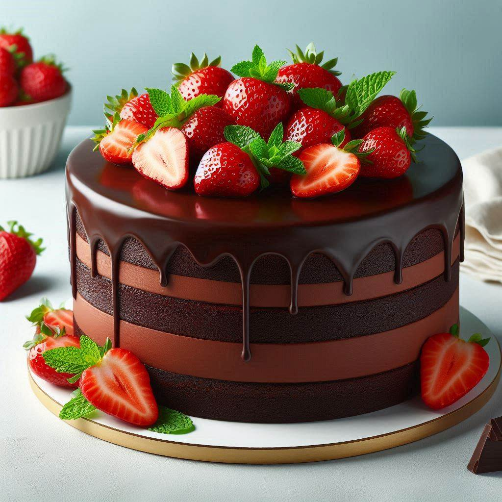

Recipe for chocolate cake

Description
This decadent chocolate cake is a true crowd-pleaser, perfect for celebrations or as an
indulgent treat. The cake itself is incredibly moist and tender, with a deep, complex
chocolate flavor that's intensified by the addition of hot coffee to the batter. This not
only enhances the chocolate taste but also results in a softer crumb. The cake's texture
strikes a perfect balance - substantial enough to hold its shape when sliced, yet light
enough to melt in your mouth.
The frosting is a velvety smooth chocolate buttercream that complements the cake beautifully.
It's rich and creamy, with a slight tanginess from the addition of sour cream that cuts
through the sweetness and adds depth. When assembled, the cake is a stunning centerpiece - dark,
glossy, and irresistibly inviting. Each bite offers a harmonious blend of intense chocolate
flavor from both the cake and frosting, creating a truly luxurious dessert experience.
Whether served at room temperature or slightly chilled, this chocolate cake is sure to
satisfy even the most discerning chocolate lovers.
Ingredients
For the cake
- 2 cups all-purpose flour
- 2 cups granulated sugar
- 3/4 cup unsweetened cocoa powder
- 2 tsp baking soda
- 1 tsp baking powder
- 1 tsp salt
- 2 eggs
- 1 cup milk
- 1/2 cup vegetable oil
- 2 tsp vanilla extract
- 1 cup hot strong coffee
For the frosting:
- 1 cup unsalted butter, softened
- 3 1/2 cups powdered sugar
- 3/4 cup unsweetened cocoa powder
- 1/3 cup milk
- 2 tsp vanilla extract
- 1/4 cup sour cream
- 1/4 tsp salt
Steps
- Preheat oven to 350°F (175°C). Grease and flour two 9-inch round cake pans.
- In a large bowl, whisk together flour, sugar, cocoa, baking soda, baking powder, and salt.
- Add eggs, milk, oil, and vanilla to the dry ingredients. Beat on medium speed for 2 minutes.
- Stir in hot coffee (batter will be thin). Pour into prepared pans.
- Bake for 30-35 minutes, until a toothpick inserted in the center comes out clean.
- Cool in pans for 10 minutes, then remove to wire racks to cool completely.
- For the frosting: In a large bowl, cream butter until light and fluffy.
- Gradually add powdered sugar and cocoa, alternating with milk. Beat until smooth.
- Mix in vanilla, sour cream, and salt until well combined.
- Once cake layers are completely cool, place one layer on a serving plate. Spread with frosting.
- Top with second layer and frost the top and sides of the cake.
- Optionally, decorate with chocolate shavings or fresh berries.
This cake serves 12-16 people. Enjoy your homemade chocolate cake!